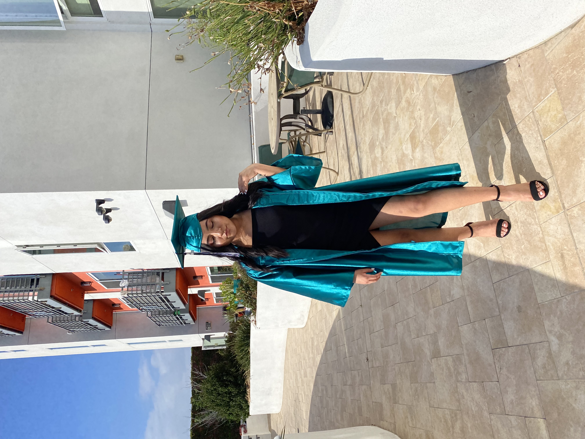
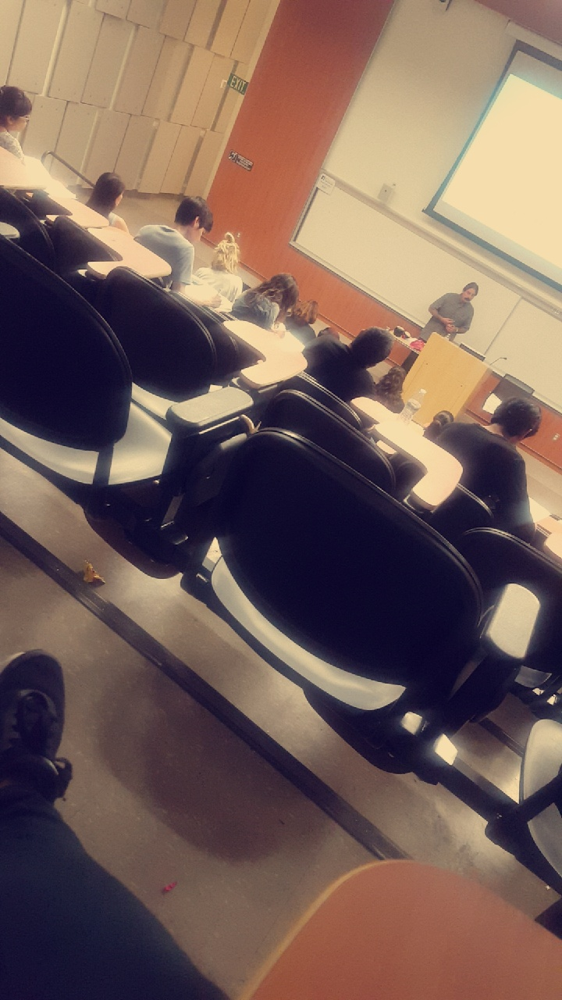

Guadalupe Gaspar
My name is Guadalupe Gaspar. I am 19 years old and I am a proud Mayan American. I am a first generation student attending the University of California Riverside. I was born and raised in Los Angeles C.A my entire life and both my parents migrated from Guatemala. Since very little I was given something very valuable to me which is my education. Both my parents were not given the opportunity of an education when they were little due to financial circumstances. Since I am given the opportunity to have an education, I acknowledge the privilege I have and I am determined to learn and grow through my education. To me, family is an important factor of my life. I have a connection with my family that keeps me grounded and motivated. I am the middle child of my family. I have an older brother, an older sister, and my youngest brother. Since very little I have had a passion for dancing. I have been dancing since I was 8 years old. Unfortunately, I have not had the time to take as many dance classes as I would have liked to but I try my best to still have some sort of connection with dance.
In my first year of college, I was extremely confused on what major I wanted to declare. I actually came into UCR as an undeclared major. It took me three quarters to realize what career field I wanted to pursue in my higher education. The reason it was extremely confusing and challenging for me to declare a major was because of what was going on in the world. The year I graduated high school and registered in college, it was the beginning of a worldwide pandemic. It was mentally draining having to be inside for various days and adding the stress of having to adjust to a quarter system did not give me time or motivation to look towards what I wanted to pursue. Slowly, I began reaching out for help through the student resource center. I was paired with a mentor towards the end of my first quarter and my mentor helped me navigate the college lifestyle. Slowly with support and dedication, I realized in my spring quarter what I wanted to pursue and the actions I had to take in order to reach my goals. The major I will soon be declaring will be Sociology.
The reason I want to get into Sociology is because I want to get into social work. I have always had a passion to help people and be a guide to people who need support. I would like to help children in the foster care system because I believe there can be so many new laws and rules implemented that can help the kids in need have better opportunities. Children in the foster care system vary from various ages and so many of them go through various traumatizing situations. Having people who genuinely care and see the children as humans and not money is such an important mindset to have and slowly as I get into this field, I would love to implement my knowledge, skills, and care towards the children impacted by the foster care system.
Experience
Teacher Assistant
• One on one support to first grade students
• Read books to students
• Helped with office work such as printing, laminating, and creating posters
Shopper
• Responsible for collecting and organizing customers orders
• Helped with maintaing a clean environment
Food Drive
• Helped promote food drive to high school students
• Organized and packed food
• Delivered food to the homeless around the community of Downtown Los Angeles
Education
Miguel Contreras High School
University of California Riverside
Portfolio

